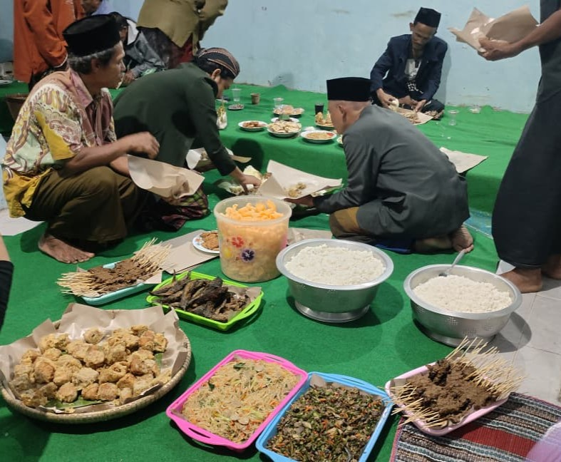

Slametan, Kenduri, dan Kearifan Budaya Desa Logandu
Adat masyarakat masih sangat kental dan diwariskan turun-temurun. Dalam setiap musim tanam maupun panen, selalu diadakan slametan sederhana berupa makan bersama. Tradisi ini dimaksudkan sebagai wujud syukur atas hasil pertanian sekaligus sarana menjaga kerukunan antarwarga. Selain itu, selametan juga dilakukan untuk memperingati kelahiran setiap individu berdasarkan penanggalan Jawa. Peringatan ini biasanya diwujudkan dalam bentuk kenduri.
Kenduri diatur dalam lingkup rukun tetangga. Satu RT bisa berisi hingga empat puluh rumah, sehingga untuk memudahkan pelaksanaan, kenduri sering kali dibagi menjadi kelompok kecil berisi sepuluh hingga dua belas rumah. Tradisi ini menjadi media penting dalam memperkuat ikatan sosial.
Bulan Suro memiliki makna khusus dalam adat. Pada bulan ini, masyarakat menggelar selametan desa yang disertai pementasan wayang kulit. Hampir seluruh wilayah Karanggayam melakukan tradisi serupa, menjadikan wayang kulit bukan hanya sebagai hiburan tetapi juga sebagai sarana doa keselamatan. Untuk melaksanakan acara ini, warga bergotong-royong melalui iuran sebesar dua puluh hingga tiga puluh ribu rupiah per rumah. Mengundang seorang dalang bahkan bisa memerlukan biaya hingga enam belas juta rupiah. Selain wayang kulit, ada pula tontonan barit, yaitu tarian tradisional yang menambah semarak acara.
Seluruh rangkaian adat ini dipahami bukan hanya sebagai bentuk pelestarian budaya, tetapi juga sebagai alat kerukunan. Melalui slametan, kenduri, dan tontonan rakyat, masyarakat menjaga kebersamaan dan memperkuat solidaritas desa dari generasi ke generasi.